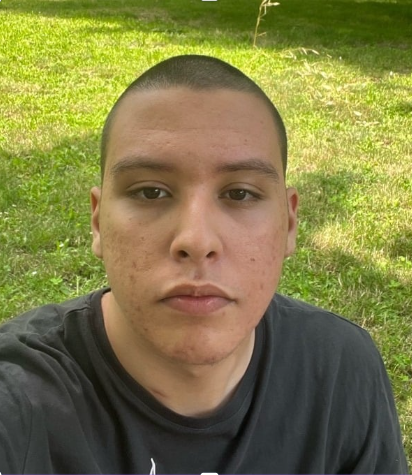

Je m'appelle Hicham FERHANI, j'ai 20 ans, et je suis actuellement en troisième année de BUT Informatique.
Passionné par le développement informatique, je m'efforce d'être sincère, franc et à l'écoute des autres.
Mon état d'esprit peut varier en fonction des situations, mais je suis généralement très optimiste.
J'ai une bonne estime de moi-même et fais généralement confiance à mes capacités et compétences.
Je suis quelqu'un qui réfléchit longuement avant d'agir, adoptant une approche prudente, surtout dans les moments où les décisions sont importantes.
Au cours de ma formation, j’ai travaillé sur des projets pratiques, comme la création de sites web en HTML, CSS, JS, TypeScript ainsi qu’en PHP.
J'ai acquis des connaissances en SQL, NOSQL (avec Cassandra et MongoDB) ainsi qu'en pl/sql pour la gestion de bases de données.
J’ai également travaillé sur de nombreux projets de création d’applications (Gestion poursuite d'étude, Site web e-commerce, My Avatar...) où j’ai pu développer mes connaissances dans plusieurs langages et framework (Symphony, Java, JS, VueJs..).
Grâce à ces projets, j’ai développé des compétences techniques et une capacité d’adaptation qui me permettent d’apprendre rapidement de nouveaux outils et langages.
Rigoureux, curieux et à l'aise avec le travail en équipe ainsi qu’avec la méthode agile, je possède également une bonne maîtrise de GitLab, GitHub et Docker, ainsi que des IDE comme Visual Studio Code et les outils JetBrains.
Après avoir obtenu mon BAC ST2D - Sciences et technologies de l'industrie à Dhuoda, j'ai intégré l'IUT de Montpellier-Sète pour effectuer un BUT informatique sur 3 ans.
J'effectue ma troisème année de BUT en formation initale, ou l'on nous a affecté une SAE qui se déroulera toute l'année.
Cet SAE est centré sur l’apprentissage par renforcement (Reinforcement Learning). L’objectif est de concevoir et entraîner des agents capables de jouer à des jeux variés, des plus simples aux classiques d’arcade comme Arkanoid ou Tetris, en explorant les mécanismes fondamentaux du RL. Le projet combine théorie et pratique, en étudiant les algorithmes classiques, en optimisant les systèmes de récompenses et en explorant des méthodes hybrides comme le Monte Carlo Tree Search (MCTS). Nous utilisons Python et la bibliothèque Gymnasium pour modéliser les environnements et tester nos agents. Ce projet permet de développer des compétences en programmation, en algorithmique et en intelligence artificielle, tout en offrant une expérience pratique de résolution de problèmes complexes.
[Lien de téléchargement du rapport de la SAE]Mes objectifs pour cette année est de trouver une alternance ou un stage en France, ainsi que de valider mon année. Concernant la suite après l'IUT, je compte postuler pour des écoles d'ingénieurs ou des Masters afin d'approfondir mes connaissances. Après mes etudes, j'espère pouvoir trouver un travail dans le développement web ou logiciel.
Accéder à la page Portfolio d'apprentissage
Au cours de mes différents projets, que ce soit en TD, en stage ou en SAE, j’ai toujours cherché à appliquer au maximum les connaissances acquises durant ma formation. Lors de mon stage, par exemple, j’ai organisé le projet avec mon binôme en mettant en place des canaux de communication, un Trello afin de mieux répartir les tâches, ainsi qu’un cahier des charges, comme nous le faisions dans certains projets du BUT à partir des exigences du client. Sur le plan informatique, j’ai appliqué l’architecture applicative web MVCS étudiée en cours, ainsi que les principes SOLID afin de produire un code lisible, maintenable et réutilisable par d’autres développeurs. J’ai également modélisé la base de données de l’application à l’aide de diagrammes UML. Concernant mes réalisations, j’estime avoir globalement acquis les bases essentielles de cette formation, même si je rencontre encore certaines difficultés dans les matières scientifiques. Durant la formation, certains cours me semblaient moins nécessaires et parfois redondants, notamment ceux de management et d’économie. Ce qui m’a particulièrement plu, en revanche, est la diversité des domaines abordés, tels que le développement web et logiciel (front-end et back-end), les réseaux ou encore les bases de données, ce qui m’a permis à la fois d’identifier mes centres d’intérêt et d’acquérir des connaissances solides dans plusieurs disciplines. Pour la suite, mon projet post-BUT est d’intégrer une école d’ingénieur ou un master afin de me spécialiser dans le développement web, le développement logiciel ou le domaine de l’intelligence artificielle.
Application web permettant de gérer la poursuite d'étude des étudiants (candidatures etc).
[En savoir plus..]Le jeu Trains est un jeu de stratégie ou le but est de marquer le plus de points possible.
[En savoir plus..]Il s'agit d'un site web e-commerce que j'ai déployé durant mon stage de 2ème année à l'étranger.
[En savoir plus..]